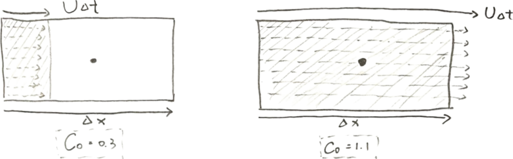
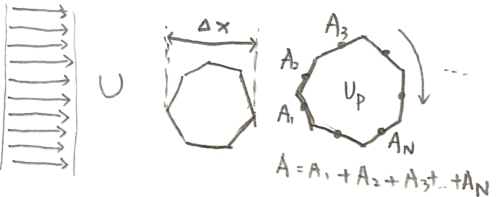

When the Courant number $Co = 0.3$, it can be interpreted that during one time step the fluid travels a distance equal to 30% of the grid spacing. When $Co = 1.1$, the fluid travels a distance exceeding the grid spacing by 10% within one time step.
When the time step, flow velocity, or grid spacing changes, the Courant number will also change. Therefore, the Courant number can be simply understood as a ratio that indicates the distance a fluid travels within a grid cell during a given time step. The meaning of the CFL condition is that the physical domain of dependence of the numerical scheme must be covered by the numerical domain of dependence. This is also why under explicit schemes the CFL number must be less than 1.
In 3D grids, there are tetrahedral, hexahedral, and polyhedral meshes of various complexities. We therefore require a more general definition of the Courant number so that it can be applied to complex 3D grids

It is necessary to find a method that is applicable to all types of grid cells in order to define the grid length $\Delta x$ and velocity $U$. These two quantities can then be used as the denominator and numerator in the Courant number formula. In CFD, the grid length $\Delta x$ is defined as the ratio of the cell volume to the total surface area of the cell $$ \Delta x \;=\; \frac{\text{Cell Volume}}{\text{Total Surface Area}} \;=\; \frac{V}{A} $$
◀ ▶